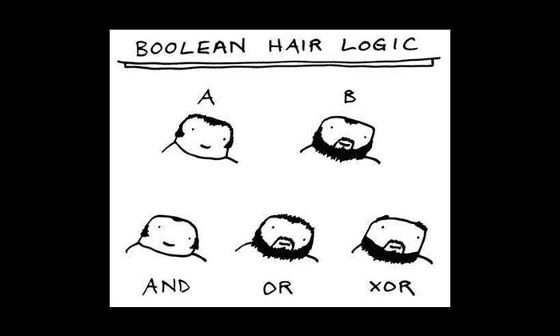
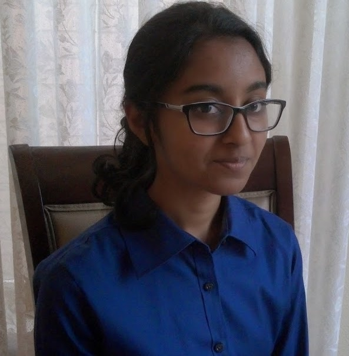

Hello! Welcome to my webpage.

Code Blog
This is my introduction website for CS 290! Here is a little information about me:
- My name is Prathyoosha Chaya, and I also go by 'PC'.
- Email: chayap@oregonstate.edu
- I am a freshman studying Computer Science. I am new to OSU, so I am excited to explore the CS department here. I took Data Structures and Programming Systems in PSU this past year.
- I would rate myself as a 2 or 3; I have written in HTML and CSS for fun before, but aside from that I am completely new to web development.
- I hope to get an understanding of full-stack web development, as it is something that I do not know much about.
- Yes, I have signed up for Piazza.
- I was extremely involved in FIRST Robotics for around 10 years, which led me to the field of Computer Science. Also, I can write in Gallifreyan! :)
Here is one of my favorite quotes:
"It never hurts to keep looking for sunshine." ~Eeyore

